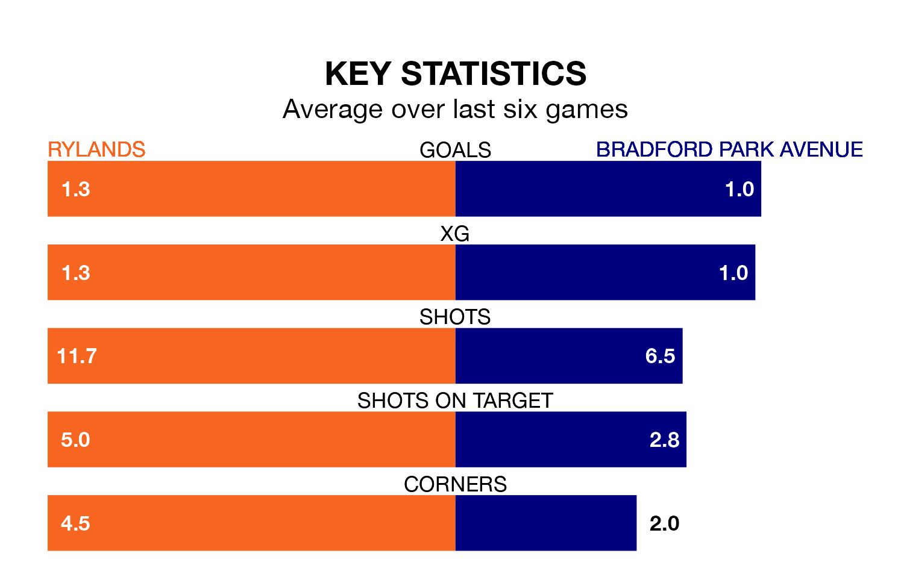

Mid-season relegation candidates Bradford Park Avenue face a challenge away against high-flying Rylands on Saturday.
Bradford Park Avenue are 20th in the Northern Premier League table, and have picked up four wins and five draws in their 28 games to date.
Rylands, meanwhile, are fourth in the standings with 50 points, having won 13 and drawn 11 of their first 27 matches, and are 13 points behind table-toppers Radcliffe Borough.
Rylands are in mixed form in Northern Premier League, with one win and four draws from their last six games.
With no wins and six losses over that period, Bradford Park Avenue's form is much worse – they have taken no points from 18, compared to the hosts' seven.
With 30 goals in 28 games so far this season, the away team are scoring at below the league average rate with 1.1 goals per game. And they are conceding more than average, letting in 59 goals at a rate of 2.1 per game.
Rylands are also below average scorers, with 1.6 goals per game, compared to a league average of 1.7. They have conceded 1.0 goal per game.
Rylands's last match was on January 27, a 2-2 draw against Basford United.
Bradford Park Avenue lost 3-2 against Lancaster City last time out, also on January 27.
Updated: 09:21 (UTC), 30/01/24